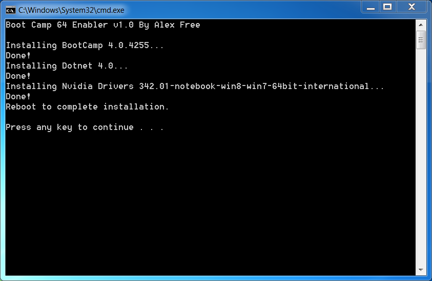
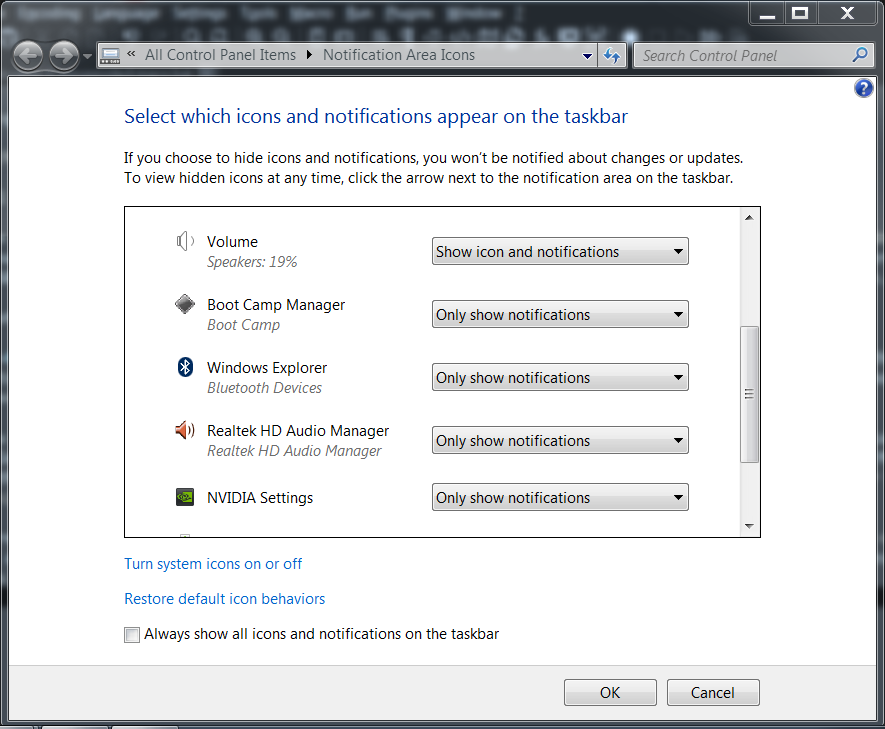
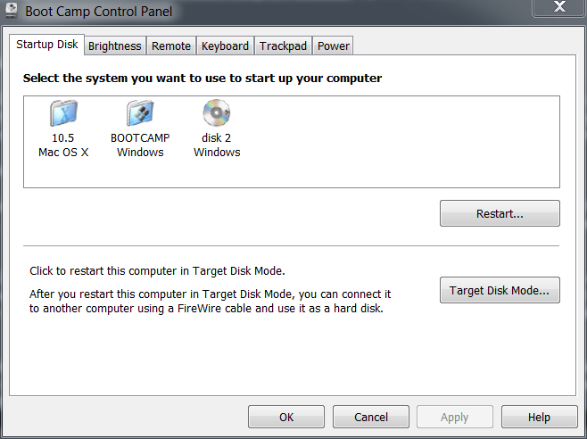

Apple does not officially support running 64-bit versions of Windows on all Macs with 64-bit processors. No official Boot Camp installer for example will run on the Early 2009 MacBook 5,2 running Windows 7 64-bit.
Boot Camp 64 Enabler allows Macs with a mobile Nvidia chipset (i.e. it has a 9400M or other Nvidia 'M' GPU in it) that do not officially support 64-bit 64-bit Windows/Boot Camp 4 to run Windows 7 64-bit like an officially supported Mac by using a modifed Boot Camp 4 and updated Nvidia drivers.



Boot Camp 64 Enabler v1.0 for Windows 7 64-bit
Using git:
Install Git-LFS, and then you can:
git clone https://github.com/alex-free/boot-camp-64-enablerUsing an already installed Mac OS X installation or a Mac OS X installer, use Disk Utility.app to make a FAT 32 partition named WIN7 or similar. Then, reboot your Mac with a Windows 7 64-bit DVD in your internal drive or an external USB one while pressing the c key. Install Windows 7, and boot to your new installation.
Download the latest release and extract it. In the extracted release directory is the bc64e.bat batch script file, just double click it to run all the installers automatically and silently without any user interaction.
When you first double click the bc64e.bat file it will prompt you for admin access automatically (needed to run the installers) since you won't have 2 finger tap to right click functionallity using the touch pad on your MacBook yet. So you wouldn't otherwise be able to right click and "Run As Administrator" since Boot Camp 64 Enabler has not yet been installed.
Your screen may temporarily go black and adjust the resolution for a few seconds while the drivers are being automatically installed. Once bc64e.bat completes and asks you to reboot your Mac, do so. You will reboot into a working system, which even includes the Boot Camp preferences no different then an officially supported Boot Camp 64-bit Mac!
BootCamp 64 Enabler itself is released into the Public Domain, see the file unlicense.txt in each release of Boot Camp 64 Enabler. The included Boot Camp 4, the Nvidia drivers, and Dotnet are all under their own respective licenses.